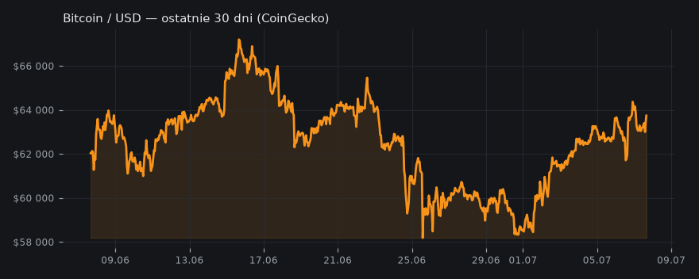
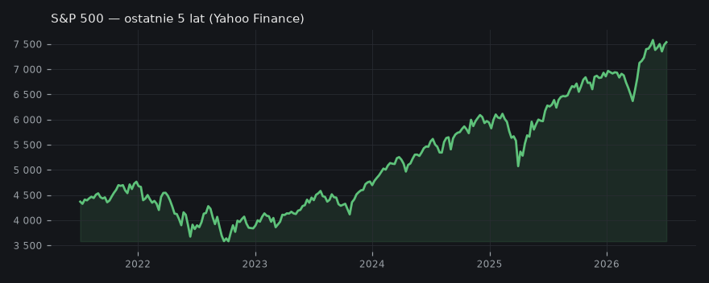

Bitcoin: Symulacja Potwierdzona? Cykliczne Dno Rynku na Horyzoncie
Bitcoin przejawia cykliczne wzorce z lat midtermowych, co może oznaczać, że obecna wyprzedaż jest zgodna z historycznymi dnami, a techniczne wskaźniki potwierdzają ten scenariusz.
bez draftu — temat zbyt suchy
🧠 Ściąga — żebyś wiedział o czym piszesz
Aktualizacja — co się zmieniło od wczoraj
### Aktualizacja — co się zmieniło od wczoraj Wczorajsza narr
Kto co mówi
- Into The Cryptoverse (Benjamin Cowen): Benjamin Cowen zauważa uderzające podobieństwa między obecnym dnem Bitcoina (wg niego ~57k) a dnem z 2018 roku (wg niego ~5.7k), sugerując, że cykliczność jest ważniejsza niż skomplikowane analizy makro. Podkreśla skuteczność strategii DCA (Dollar-Cost Averaging) w drugiej połowie lat midtermowych.
- Into The Cryptoverse (Benjamin Cowen): Benjamin Cowen wskazuje, że korekta czerwcowa (wg niego ~5%) na S&P 500 wpisuje się w historyczny wzorzec lat midtermowych, po której spodziewa się większej korekty (wg niego 10-20%) w sierpniu-wrześniu, która zbiegnie się z dnem cyklu rynkowego Bitcoina.
- The Wolf Of All Streets (Scott Melker): Scott Melker wraz z Alexem Thorne'em widzą potencjalne sygnały dna rynkowego dla Bitcoina, wskazując na dywergencje RSI na wielu interwałach czasowych oraz obronę poziomu według niego 58K przez długoterminowych inwestorów.
- EllioTrades: EllioTrades przewiduje 70% szans na test Bitcoina poniżej 50k, ale równocześnie zauważa rekordowe poziomy holdingów wielorybów (wg niego 10 mln BTC), co jest historycznie sygnałem potencjalnego dna rynku.
Kanały zgadzają się co do cykliczności rynku i możliwości osiągnięcia dna w najbliższych miesiącach. Cowen i Melker widzą bieżące sygnały wskazujące na dno lub jego bliskość, podczas gdy EllioTrades prognozuje głębszą korektę (poniżej 50k) zanim dno zostanie faktycznie osiągnięte.
Twarde dane
- S&P 500: 7 487 (+0.6% / 5 dni) · Yahoo Finance
- Bitcoin: $63 743 (+1.6% / 24h) · CoinGecko
Poziomy wg kanałów
- BTC: 57000-57700 — bieżące dno z 1 lipca 2026
- BTC: 57700 — dokładne dno z 1 lipca 2026 (57.7K)
- BTC: 5700 — dno z końca czerwca/początku lipca 2018
- BTC: 57840 — wyższe dno z koniec czerwca 2026
- BTC: 60000 — obecny poziom BTC (w momencie nagrania, początek lipca)
- BTC: 30000-60000 — możliwy zakres dla ostatecznego dna besedy
- BTC: 6000 — poziom wsparcia z 2018 (który zaraz został przebity)
- BTC: 200-day moving average — bear market resistance band, gdzie BTC był odrzucany w maju 2018 i maju 2026
- SPX: 5-8% — przewidywana głębokość korekty czerwcowej
- SPX: 10-20% — przewidywana głębokość większej korekty w sierpniu-wrześniu
- SPX: 21 week EMA — potencjalny poziom wsparcia dla korekty czerwcowej
- BTC: 21-miesięczne minimum — aktualna cena podczas nagrania
- BTC: 58000 — poziom obrony przez długoterminowych inwestorów
- BTC: 30000 — scenariusz niedźwiedzi za 12-16 miesięcy - ruptura dla MSTR
- BTC: 50000 — Khi model - 70% szans na test poniżej tej ceny
- BTC: 49000 — Autor basecase na znalezienie dna; duży żółty support level
- BTC: 57000 — Poziom z czerwca 2018 (8 lat temu) - porównanie scenariusza cykalicznego
- BTC: 60000 — Bieżący bieżący opór; nie 'clean' (nie czysty przebój)
- BTC: 100000 — Prior key level - przebity z cascada w dół
- BTC: 80000 — Prior cycle level - przebity
Wykresy
- BTC/USD — wykres
- Mapa likwidacji BTC
- Bitcoin — ostatnie 30 dni

- S&P 500
- S&P 500 — ostatnie 5 lat

Co z tego wynika
Inwestorzy powinni rozważyć strategię DCA w nadchodzących miesiącach, uwzględniając historyczne wzorce cykliczne Bitcoina i techniczne sygnały potencjalnego dna, zachowując jednocześnie ostrożność wobec możliwych dalszych spadków do poziomów według EllioTrades poniżej 50k.